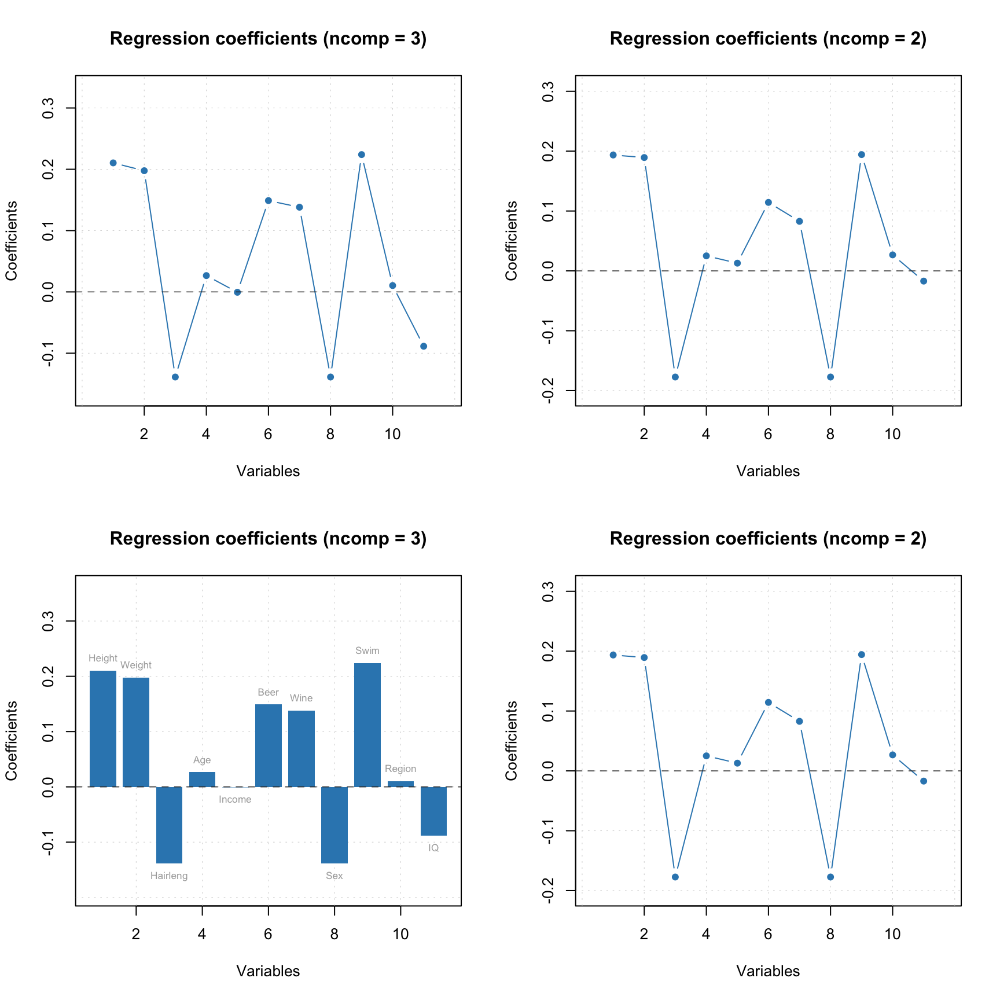
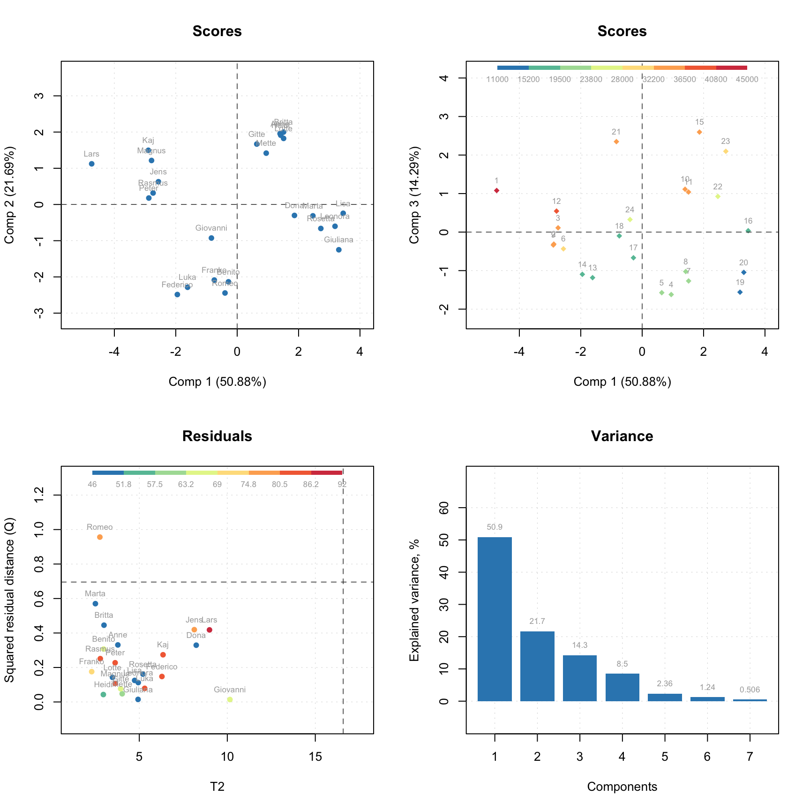
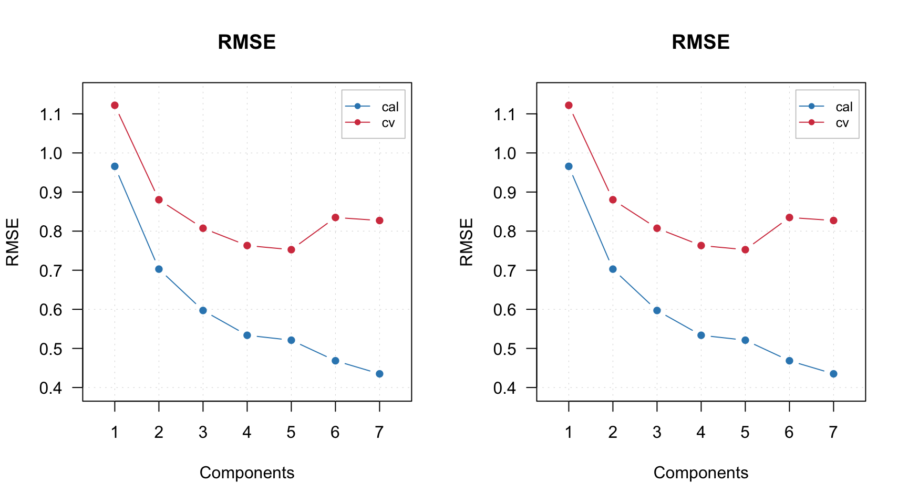

Models and results
Like we discussed in PCA, matools creates two types of objects — a model and a result. Every time you build a PLS model you get a model object. Every time you apply the model to a dataset you get a result object. For PLS, the objects have classes pls and plsres correspondingly.
Model calibration
Let’s use the same People data and create a PLS-model for prediction of Shoesize (column number four) using other 11 variables as predictors. As usual, we start with preparing datasets (we will also split the data into calibration and test subsets):
library(mdatools)
data(people)
idx = seq(4, 32, 4)
X.c = people[-idx, -4]
y.c = people[-idx, 4, drop = F]
X.t = people[idx, -4]
y.t = people[idx, 4, drop = F]So X.c and y.c are predictors and response values for calibration subset. Now let’s calibrate the model and show an information about the model object:
m = pls(X.c, y.c, 7, scale = T, info = "Shoesize prediction model")## Warning in selectCompNum.pls(model): No validation results were found!m = selectCompNum(m, 3)As you can see, the procedure is very similar to PCA, here we use 7 latent variables and select 3 first as an optimal number. Here is an info for the model object:
print(m)##
## PLS model (class pls)
##
## Call:
## pls.cal(x = x, y = y, ncomp = ncomp, center = center, scale = scale,
## method = method, cv = cv, alpha = alpha, coeffs.ci = coeffs.ci,
## coeffs.alpha = coeffs.alpha, info = info, light = light,
## exclcols = exclcols, exclrows = exclrows, ncomp.selcrit = ncomp.selcrit)
##
## Major fields:
## $ncomp - number of calculated components
## $ncomp.selected - number of selected components
## $coeffs - object (regcoeffs) with regression coefficients
## $xloadings - vector with x loadings
## $yloadings - vector with y loadings
## $weights - vector with weights
## $calres - results for calibration set
##
## Try summary(model) and plot(model) to see the model performance.As expected, we see loadings for predictors and responses, matrix with weights, and a special object (regcoeffs) for regression coefficients. The values for regression coefficients are available in m.coeffs.values, it is an array with dimension nVariables x nComponents x nPredictors. The reason to use the object instead of just an array is mainly for being able to get and plot regression coefficients for different methods. Besides that, it is possible to calculate confidence intervals and other statistics for the coefficients using Jack-Knife method (will be shown later), which produces extra entities.
The regression coefficients can be shown as plot using either function plotRegcoeffs() for the PLS model object or function plot() for the object with regression coefficients. You need to specify for which predictor (if you have more than one y-variable) and which number of components you want to see the coefficients for. By default it shows values for the optimal number of components and first y-variable as it is shown on example below.
par(mfrow = c(2, 2))
plotRegcoeffs(m)
plotRegcoeffs(m, ncomp = 2)
plot(m$coeffs, ncomp = 3, type = 'h', show.labels = T)
plot(m$coeffs, ncomp = 2)
=======
>>>>>>> developThe model keeps regression coefficients, calculated for centered and standardized data, without intercept, etc. Here are the values for three PLS components.
show(m$coeffs$values[, 3, 1])## Height Weight Hairleng Age Income
## 0.210411676 0.197646483 -0.138824482 0.026613035 -0.000590693
## Beer Wine Sex Swim Region
## 0.148917913 0.138138095 -0.138824482 0.223962000 0.010392542
## IQ
## -0.088658626You can see a summary for the regression coefficients object by calling function summary() for the object m$coeffs like it is show below. By default it shows only estimated regression coefficients for the selected y-variable and number of components. However, if you employ Jack-Knifing (see section Variable selection below), the object with regression coefficients will also contain some statistics, including standard error, p-value (for test if the coefficient is equal to zero in populatio) and confidence interval. All statistics in this case will be shown automatically with summary().
summary(m$coeffs)## Regression coefficients for Shoesize
## ------------------------------------
## Height Weight Hairleng Age Income
## 0.176077659 0.175803980 -0.164627444 0.046606027 0.059998121
## Beer Wine Sex Swim Region
## 0.133136867 0.002751573 -0.164627444 0.173739533 -0.031357608
## IQ
## -0.003353428summary(m$coeffs, ncomp = 3)## Regression coefficients for Shoesize
## ------------------------------------
## Height Weight Hairleng Age Income
## 0.210411676 0.197646483 -0.138824482 0.026613035 -0.000590693
## Beer Wine Sex Swim Region
## 0.148917913 0.138138095 -0.138824482 0.223962000 0.010392542
## IQ
## -0.088658626You can also get the corrected coefficients, which can be applied directly to the raw data (without centering and standardization), by using method getRegcoeffs():
show(getRegcoeffs(m, ncomp = 3))## Shoesize
## Intercept 1.251537e+01
## Height 8.105287e-02
## Weight 5.110732e-02
## Hairleng -5.375404e-01
## Age 1.147785e-02
## Income -2.580586e-07
## Beer 6.521476e-03
## Wine 1.253340e-02
## Sex -5.375404e-01
## Swim 1.164947e-01
## Region 4.024083e-02
## IQ -2.742712e-02
## attr(,"name")
## [1] "Regression coefficients for Shoesize"It also returns all statistics in case if Jack-Knifing was applied.
Similar to PCA, model object may contain three fields for results obtained using calibration set (calres), cross-validation (cvres) and test set validation (testres). All three have class plsres, here is how calres looks like:
print(m$calres)##
## PLS results (class plsres)
##
## Call:
## plsres(y.pred = yp, y.ref = y.ref, ncomp.selected = object$ncomp.selected,
## xdecomp = xdecomp, ydecomp = ydecomp)
##
## Major fields:
## $ncomp.selected - number of selected components
## $yp - array with predicted y values
## $y - matrix with reference y values
## $rmse - root mean squared error
## $r2 - coefficient of determination
## $slope - slope for predicted vs. measured values
## $bias - bias for prediction vs. measured values
## $ydecomp - decomposition of y values (ldecomp object)
## $xdecomp - decomposition of x values (ldecomp object)The xdecomp and ydecomp are objects similar to pcares, they contain scores, residuals and variances for decomposition of X and Y correspondingly.
print(m$calres$xdecomp)##
## Results of data decomposition (class ldecomp)
##
## Major fields:
## $scores - matrix with score values
## $T2 - matrix with T2 distances
## $Q - matrix with Q residuals
## $ncomp.selected - selected number of components
## $expvar - explained variance for each component
## $cumexpvar - cumulative explained varianceOther fields are mostly various performance statistics, including slope, coefficient of determination (R2), bias, and root mean squared error (RMSE). Besides that, the results also include reference y-values and array with predicted y-values. The array has dimension nObjects x nComponents x nResponses.
PLS predictions for a new set can be obtained using method predict:
res = predict(m, X.t, y.t)
print(res)##
## PLS results (class plsres)
##
## Call:
## plsres(y.pred = yp, y.ref = y.ref, ncomp.selected = object$ncomp.selected,
## xdecomp = xdecomp, ydecomp = ydecomp)
##
## Major fields:
## $ncomp.selected - number of selected components
## $yp - array with predicted y values
## $y - matrix with reference y values
## $rmse - root mean squared error
## $r2 - coefficient of determination
## $slope - slope for predicted vs. measured values
## $bias - bias for prediction vs. measured values
## $ydecomp - decomposition of y values (ldecomp object)
## $xdecomp - decomposition of x values (ldecomp object)Model validation
Validation is implemented similar to PCA, the only difference is that you need to provide two datasets for a test set — one for predictors (x.test) and one for response (y.test) values. Cross-validation is very important for PLS as it helps to find optimal number of PLS components (so test set performance is more fair as in this case you do not use test set for optimization). Therefore, it is always recommended to use cross-validation.
You probably have noticed a small warning we got when created the first PLS model in this chapter:
m = pls(X.c, y.c, 7, scale = T, info = "Shoesize prediction model")## Warning in selectCompNum.pls(model): No validation results were found!When you create a model, it tries to select optimal number of components automatically (which, of course, you can always change later). To do that, the method uses RMSE values, calculated for different number of components and cross-validation predictions. So, if we do not use cross-validation, it warns use about this.
There are two different ways/criteria for automatic selection. One is using first local minimum on the RMSE plot and second is so called Wold criterion, based on a ratio between PRESS values for current and next component. You can select which criterion to use by specifying parameter ncomp.selcrit (either 'min' or 'wold') as it is shown below.
m1 = pls(X.c, y.c, 7, scale = T, cv = 1, ncomp.selcrit = 'min')
show(m1$ncomp.selected)## [1] 5m2 = pls(X.c, y.c, 7, scale = T, cv = 1, ncomp.selcrit = 'wold')
show(m2$ncomp.selected)## [1] 4And here are the RMSE plots (they are identical of course):
par(mfrow = c(1, 2))
plotRMSE(m1)
plotRMSE(m2)
Parameter cv has the same format as for PCA. If it is a number, it will be used as number of segments for random cross-validation, e.g. if cv = 2 cross-validation with two segments will be carried out. For full cross-validation use cv = 1 like we did in the example above. For more advanced option you can provide a list with name of cross-validation method, number of segments and number of iterations, e.g. cv = list('rand', 4, 4) for running random cross-validation with four segments and four repetitions or cv = list('ven', 8) for systematic split into eight segments (venetian blinds).
Method summary() for model shows performance statistics calculated using optimal number of components for each of the results.
summary(m1)##
## PLS model (class pls) summary
##
## Performance and validation:
## Number of selected components: 5
## X cumexpvar Y cumexpvar RMSE Slope Bias RPD
## Cal 97.64 98.19 0.521 0.98 0e+00 7.59
## CV 92.90 96.22 0.753 0.98 -2e-04 5.26If you want more details run summary() for one of the result objects.
summary(m1$calres)##
## PLS regression results (class plsres) summary
##
## Response variable Shoesize:
## X expvar X cumexpvar Y expvar Y cumexpvar RMSE Slope Bias RPD
## Comp 1 50.505 50.505 93.779 93.779 0.966 0.938 0 4.1
## Comp 2 20.979 71.484 2.926 96.705 0.703 0.967 0 5.6
## Comp 3 8.667 80.151 0.917 97.622 0.597 0.976 0 6.6
## Comp 4 5.847 85.998 0.479 98.101 0.534 0.981 0 7.4
## Comp 5 11.642 97.640 0.088 98.189 0.521 0.982 0 7.6
## Comp 6 0.495 98.135 0.347 98.536 0.468 0.985 0 8.4
## Comp 7 0.442 98.577 0.202 98.738 0.435 0.987 0 9.1There is no column for R2 as Y cumexpvar values are the same.